This type of selection mechanism allows selection in terms of record. It is not cell based. This selection mode is specifically designed for a Grouping Grid and hence it is aware of nested tables, nested groups, and the like. Any selection that is record based affects the Table.SelectedRecords collection.
Grid Grouping control offers three types of record based selections which are together called as ListBoxSelection Modes. To enable record based selection, you need to set the ListBoxSelectionMode property to a value other than None. Once a listbox selection is enabled, it automatically turns off the model based selection by assigning None to the AllowSelection property.
Following code examples illustrate the different types of record based selections.
SelectionMode - One
It allows you to select only one item (record).
|
[C#]
this.gridGroupingControl1.TableOptions.ListBoxSelectionMode = SelectionMode.One; |
|
[VB.NET]
Me.gridGroupingControl1.TableOptions.ListBoxSelectionMode = SelectionMode.One |
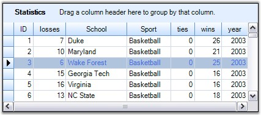
Figure 356: Selection Mode set to "One"
SelectionMode - MultiSimple
You would be able to select multiple items individually. It does not support the use of SHIFT, CTRL and ARROW keys to extend the selection.
|
[C#]
this.gridGroupingControl1.TableOptions.ListBoxSelectionMode = SelectionMode.MultiSimple; |
|
[VB.NET]
Me.gridGroupingControl1.TableOptions.ListBoxSelectionMode = SelectionMode.MultiSimple |
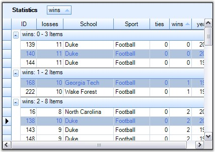
Figure 357: Selection Mode set to "MultiSimple"
SelectionMode - MultiExtended
This selection type allows multiple items selection through Shift, Ctrl and Arrow keys.
|
[C#]
this.gridGroupingControl1.TableOptions.ListBoxSelectionMode = SelectionMode.MultiExtended; |
|
[VB.NET]
Me.gridGroupingControl1.TableOptions.ListBoxSelectionMode = SelectionMode.MultiExtended |
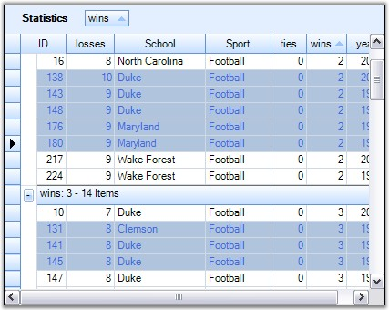
Figure 358: Selection Mode set to "MultiExtended"
Format ListBox Selections
ListBoxSelection appearance can be customized by setting the properties: SelectionBackColor, SelectionTextColor and ListBoxSelectionColorOptions.
By default, SystemColors.Highlight and SystemColors.HighlightText are the colors used as backcolor and textcolor to highlight the selected records. SelectionBackColor and SelectionTextColor property settings can be used to override these default colors.
ListBoxSelectionColorOptions is used to control the appearance of the selections. The GridListBoxSelectionColorOptions enumeration specifies the options for this property.
· ApplySelectionColor
Gets the required colors from the SelectionBackColor and SelectionTextColor properties.
|
[C#]
this.gridGroupingControl1.TableOptions.ListBoxSelectionColorOptions = GridListBoxSelectionColorOptions.ApplySelectionColor; this.gridGroupingControl1.TableOptions.SelectionBackColor = Color.PaleGreen; this.gridGroupingControl1.TableOptions.SelectionTextColor = Color.Green; |
|
[VB.NET]
Me.gridGroupingControl1.TableOptions.ListBoxSelectionColorOptions = GridListBoxSelectionColorOptions.ApplySelectionColor Me.gridGroupingControl1.TableOptions.SelectionBackColor = Color.PaleGreen Me.gridGroupingControl1.TableOptions.SelectionTextColor = Color.Green |
Here is the effect of the above settings.
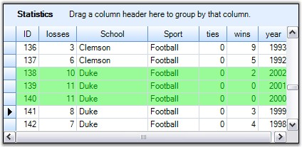
Figure 359: SelectionBackColor = "PaleGreen" and SelectionTextColor = "Green"
· Draw Alphablend
Draws alphablending over the selected row.
|
[C#]
this.gridGroupingControl1.TableOptions.ListBoxSelectionColorOptions = GridListBoxSelectionColorOptions.DrawAlphablend; |
|
[VB.NET]
Me.gridGroupingControl1.TableOptions.ListBoxSelectionColorOptions = GridListBoxSelectionColorOptions.DrawAlphablend |
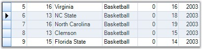
Figure 360: Drawing Alpha Blending over the Selected Row
· InvertCells
Inverts the cells in selected row. As a result, the back color of the cell is used to draw the text and the CellTextColor becomes its BackColor.
|
[C#]
this.gridGroupingControl1.TableOptions.ListBoxSelectionColorOptions = GridListBoxSelectionColorOptions.InvertCells; |
|
[VB.NET]
Me.gridGroupingControl1.TableOptions.ListBoxSelectionColorOptions = GridListBoxSelectionColorOptions.InvertCells |
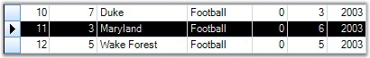
Figure 361: Inverting Cells in the Selected Row
· None
Do not change the appearance of the cells. The cell appearance could be specified manually by handling TableControlPrepareViewStyleInfo and TableControlCellDrawn events.
|
[C#]
this.gridGroupingControl1.TableOptions.ListBoxSelectionColorOptions = GridListBoxSelectionColorOptions.None; |
|
[VB.NET]
Me.gridGroupingControl1.TableOptions.ListBoxSelectionColorOptions = GridListBoxSelectionColorOptions.None |
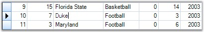
Figure 362: Cell Appearance customized by handling
TableControlPrepareViewStyleInfo and TableControlCellDrawn Events
ListBoxSelection CurrentCellOptions
When ListBoxSelection mode was set, you will be able to control the appearance and behavior of the CurrentCell by setting ListBoxSelectionCurrentCellOptions property to a desired value. Possible values are defined by the GridListBoxSelectionCurrentCellOptions enumeration which are described below.
· HideCurrentCell
Don't select a current cell in the current row.
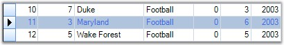
Figure 363: ListBoxSelectionCurrentCellOptions.HideCurrentCell Enabled
· WhiteCurrentCell
When a current cell is in current row, it is drawn with the original cell background color.
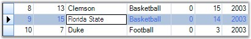
Figure 364: ListBoxSelectionCurrentCellOptions.WhiteCurrentCell Enabled
· None
When a current cell is in current row, it is drawn with the same color used for highlighting the whole record.
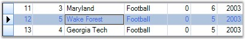
Figure 365: ListBoxSelectionCurrentCellOptions.None Enabled
· MoveCurrentCellWithMouse
Used only with SelectionMode.MultiExtended. Moves current cell when user extends the selection with mouse. Below image well illustrates this mode. Here, the selection started with the cell {R2:C1} and is extended up to Row4 through a mouse drag that made the current cell to shift to the cell {R4:C1} by following the mouse.
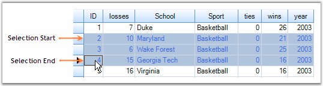
Figure 366: ListBoxSelectionCurrentCellOptions.MoveCurrentCellWithMouse Enabled
 Note: For more details, refer the following
browser sample:
Note: For more details, refer the following
browser sample:
<Install Location>\Syncfusion\EssentialStudio\[Version Number]\Windows\Grid.Grouping.Windows\Samples\2.0\Grouping Grid Options\Table Options Demo